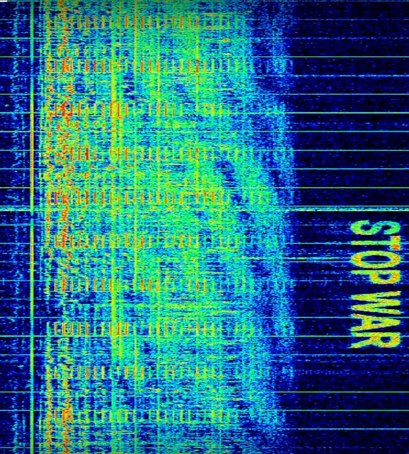
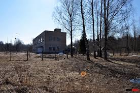

The Buzzer (UVB-76)
Povarovo, Soviet Union / Russia — Active since ~1970s

The Event
Since the late 1970s, a shortwave radio station on the frequency 4625 kHz has broadcast a monotonous, repeating buzz approximately 25 times per minute. On rare occasions, the buzzer stops, replaced by a voice reading a string of names and numbers in Russian before the buzzing resumes. Despite the fall of the Soviet Union, the signal has never ceased.


Current Theories
The Archive examines the geopolitical and technical purpose of this 'Ghost Station'.
- The Dead Hand Relay Speculation suggests the station acts as a 'Dead Hand' trigger—a fail-safe system that ensures a retaliatory nuclear strike if the signal is ever fully cut.
- Numbers Station A sophisticated method for transmitting encoded instructions to intelligence operatives in the field, disguised as atmospheric noise.